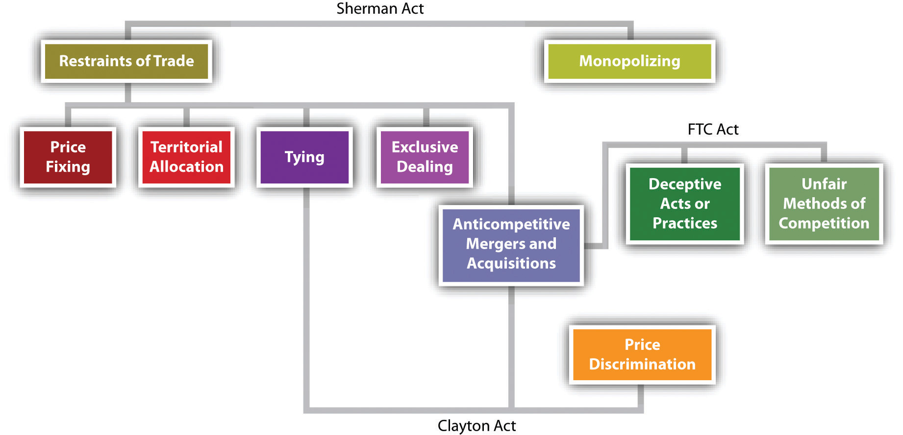

In this chapter, we take up the origins of the federal antitrust laws and the basic rules governing restraints of trade.Sherman Act, Section 1; Clayton Act, Section 3. We also look at concentrations of market power: monopoly and acquisitions and mergers.Sherman Act, Section 2; Clayton Act, Section 7. In Chapter 27 "Unfair Trade Practices and the Federal Trade Commission", we explore the law of deceptive acts and unfair trade practices, both as administered by the Federal Trade Commission (FTC) and as regulated at common law.
Figure 26.1 An Antitrust Schematic
The antitrust laws are aimed at maintaining competition as the driving force of the US economy. The very word antitrust implies opposition to the giant trusts that began to develop after the Civil War. Until then, the economy was largely local; manufacturers, distributors, and retailers were generally small. The Civil War demonstrated the utility of large-scale enterprise in meeting the military’s ferocious production demands, and business owners were quick to understand the advantage of size in attracting capital. For the first time, immense fortunes could be made in industry, and adventurous entrepreneurs were quick to do so in an age that lauded the acquisitive spirit.
The first great business combinations were the railroads. To avoid ruinous price wars, railroad owners made private agreements, known as “pools,” through which they divided markets and offered discounts to favored shippers who agreed to ship goods on certain lines. The pools discriminated against particular shippers and certain geographic regions, and public resentment grew.
Farmers felt the effects first and hardest, and they organized politically to express their opposition. In time, they persuaded many state legislatures to pass laws regulating railroads. In Munn v. Illinois, the Supreme Court rejected a constitutional attack on a state law regulating the transportation and warehousing of grain; the court declared that the “police powers” of the states permit the regulation of property put to public uses.Munn v. Illinois, 94 U.S. 113 (1877). But over time, many state railroad laws were struck down because they interfered with interstate commerce, which only Congress may regulate constitutionally. The consequence was federal legislation: the Interstate Commerce Act of 1887, establishing the first federal administrative agency, the Interstate Commerce Commission.
In the meantime, the railroads had discovered that their pools lacked enforcement power. Those who nominally agreed to be bound by the pooling arrangement could and often did cheat. The corporate form of business enterprise allowed for potentially immense accumulations of capital to be under the control of a small number of managers; but in the 1870s and 1880s, the corporation was not yet established as the dominant legal form of operation. To overcome these disadvantages, clever lawyers for John D. Rockefeller organized his Standard Oil of Ohio as a common-law trust. Trustees were given corporate stock certificates of various companies; by combining numerous corporations into the trust, the trustees could effectively manage and control an entire industry. Within a decade, the Cotton Trust, Lead Trust, Sugar Trust, and Whiskey Trust, along with oil, telephone, steel, and tobacco trusts, had become, or were in the process of becoming, monopolies.
Consumers howled in protest. The political parties got the message: In 1888, both Republicans and Democrats put an antitrust plank in their platforms. In 1889, the new president, Republican Benjamin Harrison, condemned monopolies as “dangerous conspiracies” and called for legislation to remedy the tendency of monopolies that would “crush out” competition.
The result was the Sherman Antitrust Act of 1890, sponsored by Senator John Sherman of Ohio. Its two key sections forbade combinations in restraint of trade and monopolizing. Senator Sherman and other sponsors declared that the act had roots in a common-law policy that frowned on monopolies. To an extent, it did, but it added something quite important for the future of business and the US economy: the power of the federal government to enforce a national policy against monopoly and restraints of trade. Nevertheless, passage of the Sherman Act did not end the public clamor, because fifteen years passed before a national administration began to enforce the act, when President Theodore Roosevelt—”the Trustbuster”—sent his attorney general after the Northern Securities Corporation, a transportation holding company.
During its seven years, the Roosevelt administration initiated fifty-four antitrust suits. The pace picked up under the Taft administration, which in only four years filed ninety antitrust suits. But the pressure for further reform did not abate, especially when the Supreme Court, in the Standard Oil case of 1911,Standard Oil Co. of New Jersey v. United States, 221 U.S. 1 (1911). declared that the Sherman Act forbids only “unreasonable” restraints of trade. A congressional investigation of US Steel Corporation brought to light several practices that had gone unrestrained by the Sherman Act. It also sparked an important debate, one that has echoes in our own time, about the nature of national economic policy: should it enforce competition or regulate business in a partnership kind of arrangement?
Big business was firmly on the side of regulation, but Congress opted for the policy followed waveringly to the present: competition enforced by government, not a partnership of government and industry, must be the engine of the economy. Accordingly, in 1914, at the urging of President Woodrow Wilson, Congress enacted two more antitrust laws, the Clayton Act and the Federal Trade Commission Act. The Clayton Act outlawed price discrimination, exclusive dealing and tying contracts, acquisition of a company’s competitors, and interlocking directorates. The FTC Act outlawed “unfair methods” of competition, established the FTC as an independent administrative agency, and gave it power to enforce the antitrust laws alongside the Department of Justice.
The Sherman, Clayton, and FTC Acts remain the basic texts of antitrust law. Over the years, many states have enacted antitrust laws as well; these laws govern intrastate competition and are largely modeled on the federal laws. The various state antitrust laws are beyond the scope of this textbook.
Two additional federal statutes were adopted during the next third of a century as amendments to the Clayton Act. Enacted in the midst of the Depression in 1936, the Robinson-Patman Act prohibits various forms of price discrimination. The Celler-Kefauver Act, strengthening the Clayton Act’s prohibition against the acquisition of competing companies, was enacted in 1950 in the hopes of stemming what seemed to be a tide of corporate mergers and acquisitions. We will examine these laws in turn.
Section 1 of the Sherman Act declares, “Every contract, combination in the form of trust or otherwise, or conspiracy, in restraint of trade or commerce among the several states, or with foreign nations, is declared to be illegal.” This is sweeping language. What it embraces seems to depend entirely on the meaning of the words “restraint of trade or commerce.” Whatever they might mean, every such restraint is declared unlawful. But in fact, as we will see, the proposition cannot be stated quite so categorically, for in 1911 the Supreme Court limited the reach of this section to unreasonable restraints of trade.
What does “restraint of trade” mean? The Sherman Act’s drafters based the act on a common-law policy against monopolies and other infringements on competition. But common law regarding restraints of trade had been developed in only rudimentary form, and the words have come to mean whatever the courts say they mean. In short, the antitrust laws, and the Sherman Act in particular, authorize the courts to create a federal “common law” of competition.
Section 2 of the Sherman Act prohibits monopolization: “Every person who shall monopolize, or attempt to monopolize, or combine or conspire with any other person or persons, to monopolize any part of the trade or commerce among the several states, or with foreign nations, shall be deemed guilty of a misdemeanor.” In 1976, Congress upped the ante: violations of the Sherman Act are now felonies. Unlike Section 1, Section 2 does not require a combination between two or more people. A single company acting on its own can be guilty of monopolizing or attempting to monopolize.
The Clayton Act was enacted in 1914 to plug what many in Congress saw as loopholes in the Sherman Act. Passage of the Clayton Act was closely linked to that of the FTC Act. Unlike the Sherman Act, the Clayton Act is not a criminal statute; it merely declares certain defined practices as unlawful and leaves it to the government or to private litigants to seek to enjoin those practices. But unlike the FTC Act, the Clayton Act does spell out four undesirable practices. Violations of the Sherman Act require an actual adverse impact on competition, whereas violations of the Clayton Act require merely a probable adverse impact. Thus the enforcement of the Clayton Act involves a prediction that the defendant must rebut in order to avoid an adverse judgment.
The four types of proscribed behavior are these:
Like the Clayton Act, the FTC Act is a civil statute, involving no criminal penalties. Unlike the Clayton Act, its prohibitions are broadly worded. Its centerpiece is Section 5, which forbids “unfair methods of competition in commerce, and unfair or deceptive acts or practices in commerce.” We examine Section 5 in Chapter 27 "Unfair Trade Practices and the Federal Trade Commission".
There are four different means of enforcing the antitrust laws.
First, the US Department of Justice may bring civil actions to enjoin violations of any section of the Sherman and Clayton Acts and may institute criminal prosecutions for violations of the Sherman Act. Both civil and criminal actions are filed by the offices of the US attorney in the appropriate federal district, under the direction of the US attorney general. In practice, the Justice Department’s guidance comes through its Antitrust Division in Washington, headed by an assistant attorney general. With several hundred lawyers and dozens of economists and other professionals, the Antitrust Division annually files fewer than one hundred civil and criminal actions combined. On average, far more criminal cases are filed than civil cases. In 2006, thirty-four criminal cases and twelve civil cases were filed; in 2007, forty criminal cases and six civil cases; in 2008, fifty-four criminal cases and nineteen civil cases; and in 2009, seventy-two criminal cases and nine civil cases.
The number of cases can be less important than the complexity and size of a particular case. For example, U.S. v. American Telephone & Telegraph and U.S. v. IBM were both immensely complicated, took years to dispose of, and consumed tens of thousands of hours of staff time and tens of millions of dollars in government and defense costs.
Second, the FTC hears cases under the Administrative Procedure Act, as described in Chapter 5 "Administrative Law". The commission’s decisions may be appealed to the US courts of appeals. The FTC may also promulgate “trade regulation rules,” which define fair practices in specific industries. The agency has some five hundred lawyers in Washington and a dozen field offices, but only about half the lawyers are directly involved in antitrust enforcement. The government’s case against Microsoft was, like the cases against AT&T and IBM, a very complex case that took a large share of time and resources from both the government and Microsoft.
Third, in the Antitrust Improvements Act of 1976, Congress authorized state attorneys general to file antitrust suits in federal court for damages on behalf of their citizens; such a suit is known as a parens patriae claim. Any citizen of the state who might have been injured by the defendant’s actions may opt out of the suit and bring his or her own private action. The states have long had the authority to file antitrust suits seeking injunctive relief on behalf of their citizens.
Fourth, private individuals and companies may file suits for damages or injunctions if they have been directly injured by a violation of the Sherman or Clayton Act. Private individuals or companies may not sue under the FTC Act, no matter how unfair or deceptive the behavior complained of; only the FTC may do so. In the 1980s, more than 1,500 private antitrust suits were filed in the federal courts each year, compared with fewer than 100 suits filed by the Department of Justice. More recently, from 2006 to 2008, private antitrust suits numbered above 1,000 but dropped significantly, to 770, in 2009. The pace was even slower for the first half of 2010. Meanwhile, the Department of Justice filed 40 or fewer criminal antitrust cases from 2006 to 2008; that pace has quickened under the Obama administration (72 cases in 2009).
The Sherman and Clayton Acts apply when a company’s activities affect US commerce. This means that these laws apply to US companies that agree to fix the price of goods to be shipped abroad and to the acts of a US subsidiary of a foreign company. It also means that non–US citizens and business entities can be prosecuted for violations of antitrust laws, even if they never set foot in the United States, as long as their anticompetitive activities are aimed at the US market. For example, in November of 2010, a federal grand jury in San Francisco returned an indictment against three former executives in Taiwan. They had conspired to fix prices on color display tubes (CDTs), a type of cathode-ray tube used in computer monitors and other specialized applications.
The indictment charged Seung-Kyu “Simon” Lee, Yeong-Ug “Albert” Yang, and Jae-Sik “J. S.” Kim with conspiring with unnamed coconspirators to suppress and eliminate competition by fixing prices, reducing output, and allocating market shares of CDTs to be sold in the United States and elsewhere. Lee, Yang, and Kim allegedly participated in the conspiracy during various time periods between at least as early as January 2000 and as late as March 2006. The conspirators met in Taiwan, Korea, Malaysia, China, and elsewhere, but not in the United States. They allegedly met for the purpose of exchanging CDT sales, production, market share, and pricing information for the purpose of implementing, monitoring, and enforcing their agreements. Because the intended effects of their actions were to be felt in the United States, the US antitrust laws could apply.
Until 1976, violations of the Sherman Act were misdemeanors. The maximum fine was $50,000 for each count on which the defendant was convicted (only $5,000 until 1955), and the maximum jail sentence was one year. But in the CDT case just described, each of the three conspirators was charged with violating the Sherman Act, which carries a maximum penalty of ten years in prison and a $1 million fine for individuals. The maximum fine may be increased to twice the gain derived from the crime or twice the loss suffered by the victims if either of those amounts is greater than the statutory maximum fine of $1 million.
One provision in the Sherman Act, not much used, permits the government to seize any property in transit in either interstate or foreign commerce if it was the subject of a contract, combination, or conspiracy outlawed under Section 1.
The Justice Department may enforce violations of the Sherman and Clayton Acts by seeking injunctions in federal district court. The injunction can be a complex set of instructions, listing in some detail the practices that a defendant is to avoid and even the way in which it will be required to conduct its business thereafter. Once an injunction is issued and affirmed on appeal, or the time for appeal has passed, it confers continuing jurisdiction on the court to hear complaints by those who say the defendant is violating it. In a few instances, the injunction or a consent decree is in effect the basic “statute” by which an industry operates. A 1956 decree against American Telephone & Telegraph Company (AT&T) kept the company out of the computer business for a quarter-century, until the government’s monopoly suit against AT&T was settled and a new decree issued in 1983. The federal courts also have the power to break up a company convicted of monopolizing or to order divestitureA remedy, occasionally used, to break up a firm into smaller, independent units, where the firm has exercised its monopoly power in ways that harm competition. For example, the breakup of AT&T was a divestiture. when the violation consists of unlawful mergers and acquisitions.
The FTC may issue cease and desist orders against practices condemned under Section 5 of the FTC Act—which includes violations of the Sherman and Clayton Acts—and these orders may be appealed to the courts.
Rather than litigate a case fully, defendants may agree to consent decreesA judicial order entered into by defendants in lieu of litigating, in which they admit their guilt but agree to not carry on certain activities complained of. Failure to comply with the terms will result in fines. Similar to an injunction or a cease and desist order., in which, without admitting guilt, they agree not to carry on the activity complained of. Violations of injunctions, cease and desist orders, and consent decrees subject companies to a fine of $10,000 a day for every day the violation continues. Companies frequently enter into consent decrees—and not just because they wish to avoid the expense and trouble of trial. Section 5 of the Clayton Act says that whenever an antitrust case brought by the federal government under either the Clayton Act or the Sherman Act goes to final judgment, the judgment can be used, in a private suit in which the same facts are at issue, as prima facie evidence that the violation was committed. This is a powerful provision, because it means that a private plaintiff need prove only that the violation in fact injured him. He need not prove that the defendant committed the acts that amount to antitrust violations. Since this provision makes it relatively easy for private plaintiffs to prevail in subsequent suits, defendants in government suits have a strong inducement to enter into consent decrees, because these are not considered judgments. Likewise, a guilty plea in a criminal case gives the plaintiff in a later private civil suit prima facie evidence of the defendant’s liability. However, a plea of nolo contendere will avoid this result. Section 5 has been the spur for a considerable proportion of all private antitrust suits. For example, the government’s price-fixing case against the electric equipment industry that sent certain executives of General Electric to jail in the 1950s led to more than 2,200 private suits.
The crux of the private suit is its unique damage award: any successful plaintiff is entitled to collect three times the amount of damages actually suffered—treble damages, as they are known—and to be paid the cost of his attorneys. These fees can be huge: defendants have had to pay out millions of dollars for attorneys’ fees alone in single cases. The theory of treble damagesFor private lawsuits, successful plaintiffs may collect three times the amount of damages actually suffered. is that they will serve as an incentive to private parties to police industry for antitrust violations, thus saving the federal government the immense expense of maintaining an adequate staff for that job.
One of the most important developments in antitrust law during the 1970s was the rise of the class action. Under liberalized rules of federal procedure, a single plaintiff may sue on behalf of the entire class of people injured by an antitrust violation. This device makes it possible to bring numerous suits that would otherwise never have been contemplated. A single individual who has paid one dollar more than he would have been charged in a competitive market obviously will not file suit. But if there are ten million consumers like him, then in a class action he may seek—on behalf of the entire class, of course—$30 million ($10 million trebled), plus attorneys’ fees. Critics charge that the class action is a device that in the antitrust field benefits only the lawyers, who have a large incentive to find a few plaintiffs willing to have their names used in a suit run entirely by the lawyers. Nevertheless, it is true that the class action permits antitrust violations to be rooted out that could not otherwise be attacked privately. During the 1970s, suits against drug companies and the wallboard manufacturing industry were among the many large-scale antitrust class actions.
The antitrust laws, and especially Section 1 of the Sherman Act, are exceedingly vague. As Chief Justice Charles Evans Hughes once put it, “The Sherman Act, as a charter of freedom, has a generality and adaptability comparable to that found to be desirable in constitutional provisions.”Appalachian Coals v. United States, 288 U.S. 344, 359 (1933). Without the sweeping but vague language, the antitrust laws might quickly have become outdated. As written, they permit courts to adapt the law to changing circumstances. But the vagueness can lead to uncertainty and uneven applications of the law.
Section 1 of the Sherman Act says that “every” restraint of trade is illegal. But is a literal interpretation really possible? No, for as Justice Louis Brandeis noted in 1918 in one of the early price-fixing cases, “Every agreement concerning trade, every regulation of trade restrains. To bind, to restrain, is of their very essence.”Chicago Board of Trade v. United States, 246 U.S. 231 (1918). When a manufacturing company contracts to buy raw materials, trade in those goods is restrained: no one else will have access to them. But to interpret the Sherman Act to include such a contract is an absurdity. Common sense says that “every” cannot really mean every restraint.
Throughout this century, the courts have been occupied with this question. With the hindsight of thousands of cases, the broad outlines of the answer can be confidently stated. Beginning with Standard Oil Co. of New Jersey v. United States, the Supreme Court has held that only unreasonable restraints of trade are unlawful.Standard Oil Co. of New Jersey v. United States, 221 U.S. 1 (1911).
Often called the rule of reasonA judicial test balancing the positive effects of an agreement against its potentially anticompetitive effects., the interpretation of Section 1 made in Standard Oil itself has two possible meanings, and they have been confused over the years. The rule of reason could mean that a restraint is permissible only if it is ancillary to a legitimate business purpose. The standard example is a covenant not to compete. Suppose you decide to purchase a well-regarded bookstore in town. The proprietor is well liked and has developed loyal patrons. He says he is going to retire in another state. You realize that if he changed his mind and stayed in town to open another bookstore, your new business would suffer considerably. So you negotiate as a condition of sale that he agrees not to open another bookstore within ten miles of the town for the next three years. Since your intent is not to prevent him from going into business—as it would be if he had agreed never to open a bookstore anywhere—but merely to protect the value of your purchase, this restraint of trade is ancillary to your business purpose. The rule of reason holds that this is not an unlawful restraint of trade.
Another interpretation of the rule of reason is even broader. It holds that agreements that might directly impair competition are not unlawful unless the particular impairment itself is unreasonable. For example, several retailers of computer software are distraught at a burgeoning price war that will possibly reduce prices so low that they will not be able to offer their customers proper service. To avert this “cutthroat competition,” the retailers agree to set a price floor—a floor that, under the circumstances, is reasonable. Chief Justice Edward White, who wrote the Standard Oil opinion, might have found that such an agreement was reasonable because, in view of its purposes, it was not unduly restrictive and did not unduly restrain trade.
But this latter view is not the law. Almost any business agreement could enhance the market power of one or more parties to the agreement, and thus restrain trade. “The true test of legality,” Justice Brandeis wrote in 1918 in Chicago Board of Trade, “is whether the restraint imposed is such as merely regulates and perhaps thereby promotes competition or whether it is such as may suppress or even destroy competition.”Chicago Board of Trade v. United States, 246 U.S. 231 (1918). Section 1 violations analyzed under the rule of reason will look at several factors, including the purpose of the agreement, the parties’ power to implement the agreement to achieve that purpose, and the effect or potential effect of the agreement on competition. If the parties could have used less restrictive means to achieve their purpose, the Court would more likely have seen the agreement as unreasonable.Chicago Board of Trade v. United States, 246 U.S. 231 (1918).
Not every act or commercial practice needs to be weighed by the rule of reason. Some acts have come to be regarded as intrinsically or necessarily impairing competition, so that no further analysis need be made if the plaintiff can prove that the defendant carried them out or attempted or conspired to do so. Price-fixing is an example. Price-fixing is said to be per se illegalUnlawful on its face. Applies to acts that by their very nature are regarded as impairing competition. For example, price-fixing is said to be per se illegal under the Sherman Act. under the Sherman Act—that is, unlawful on its face. The question in a case alleging price-fixingAgreements, usually among competitors, that directly set prices, exchange price information, control output, or regulate competitive benefits. is not whether the price was reasonable or whether it impaired or enhanced competition, but whether the price in fact was fixed by two sellers in a market segment. Only that question can be at issue.
The rule of reason and the per se rules apply to the Sherman Act. The Clayton Act has a different standard. It speaks in terms of acts that may tend substantially to lessen competition. The courts must construe these terms too, and in the sections that follow, we will see how they have done so.
The preservation of competition is an important part of public policy in the United States. The various antitrust laws were crafted in response to clear abuses by companies that sought to claim easier profits by avoiding competition through the exercise of monopoly power, price-fixing, or territorial agreements. The Department of Justice and the Federal Trade Commission have substantial criminal and civil penalties to wield in their enforcement of the various antitrust laws.